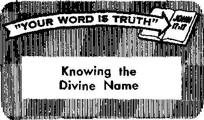

How Safe Are You?
HAGE 9
How Safe Are You?
HAGE 9
The Art and Science of Chiropractic
PAGE 12
Forests Show Nature’s Economy
PAGE 17
THE MISSION OF THIS JOURNA1
Newt sources thot are able to keep you awake to th* vital Issues of our times must be unfettered by censorship and selfish interests. "Awake!" has no fetters. It recognizes facts, faces facts, is free to publish facts. It is not bound by political ambitions or obligations; it is unhampered by advertisers whose toes must not be trodden on; it is unprejudiced by traditional creeds. This journal keeps itself free that it may speak freely to you. But it does not abuse its freedom. It maintains integrity to truth.
"Awake!” uses the regular news channels, but is not dependent on them. Its own correspondents are on al! continents, in scores of nations. From the four corners of the earth their uncensored, on-the-scenes reports come to you through these columns. This journal's viewpoint is not narrow, but is international. It is read in many nations, in many languages, by persons of al! ages. Through its pages many fields af knowledge pass in review—government, commerce, religion, history, geography, science, socio! conditions, natural wonders—why, its coverage is as brood as the earth and as high as the heavens.
"Awake!” pledges itself to righteous principles, to exposing hidden foes and subtle dangers, to championing freedom for all, to comforting mourners and strengthening those disheartened by the failures of a delinquent world, reflecting sure hope for the establishment of a righteous New World.
Get acquainted with "Awakel" Keep awake by reading “Awake!"
in— Published Simultaneously in the' United States by the WATCHTOWER BIBLE AND TRACT SOCIETY OF NEW YORK, INC.
117 Adams Street Brooklyn 1, N.Y., U.S.A*
and in England by WATCH TOWER BIBLE AND TRACT SOCIETY
Watch Tower House, The Ridgeway London N.W. 7, England
N, H. Know, Presidenf Grant Suiter, Secretary
Printing thi» issue: 3,600,000 4d a copy (Auttralla, Bd; South Africa, 3/jC)
"AwaktiT" I* viblhhed In th« following 25 langoapa: EWm I monthly—Afrikaans. Clnyatlja, Danish, Dutch, Eng* ]Jah, Finnish. French, German, Greek, Italian, Japanese, Norwegian, Portuguese, Spanish, Swedish, Tafialou, Zulu. Monthly—Cobu-Vlwan, Chinese, Il&etuio. Korean, Malayalam, Poliak. Tamil, Ukrainian.
Yearly subscriptinn nites
Oitas for semimonthly editions
America, (J.$.T 117 Adams 8t.h Brooklyn 1. X.Y. $1 Aartralla, 11 Beresford Rd., fitrstkfleld, N.S.W. B/-Canada, 150 Briclgfilanrl Ave., Toronto 19, Ont. Si England, Watch Tower House,
The Ridgeway, London N’.W. 7 7/-
Naw Inland. 631 New North Rd., Auckland, S.W. 1 7/-Mltll Africa! Private Bag, Elaodsfonlein, Tvl. 7 Or
Monthly editions coat half the shove rates.
Ranlttanaa* frtr subscriptions should ba sent to Iha cffloa in your country. Otherwise send your remittance U> London. Notice of expiration Is sent al teaaf twu issues before subscription expires.
CHAnges OF ADDRESS should reach us thirty day* before year siodni date. Give as yn»r old afil n*w address (If possible, yoor old address label). Watclr Towsr, Watch Toww Hoesa, The Ridgeway, London N.W. 7. En a land.
Entered ae second-class matter at. Brooklyn, N.Y. Printed In England
Th* Bible translation ased In “Awato!” Is the New World Translrtlta af the Holy Scrlyttrw, 1961 edition. When other translations are ised the following symbols will appotr behind the citathm:
AS - American ^standard Version AT - An American Translation AV — Authorized Version (1611) JJg - .1, N. Darby'y version
Uy - Catholic Douay version ED - The Emphatic Diaglott JP - Jewish Publication Soc. L& - Isaac Leeser'a version
Mo — James Moffatt's version JZ.Q — J. B. Rotherham's version “ Revised Standard Version
Yff — Robert Young's version
CONTENTS
Do You Unwittingly Sow Discontent?
Why Be Interested in What Others
The Art and Science of Chiropractic
Clergy Fail in Moral Leadership
“Your Word Is Truth”

THERE are those who deliberately sow discontent. They usually have an ulterior motive, such as “to divide and conquer.” It is a method used by political rulers and ruthless power-hungry businessmen, and it was used first of all by none other than
h piyi ONWIITTIIIHI^V MW Nttunn?
things? Or a mother may be critical of her husband’s business judgments and express this before their children. Wil] this not tend to make them discontented with what their father provides ? Thus unwittingly one may sow discontent, and that right
Satan the Devil. By planting doubt and suspicion in the mind of Eve he sowed discontent, and that, of course, for an ulterior purpose.
Obviously no person of goodwill toward God and no one who loves his neighbor as himself will deliberately sow discontent He will not scheme to make others discontented with their lot, causing them to take a foolish course from which he may personally profit. But unless one is careful he may unwittingly sow discontent in the hearts of others. How so? By coming short in empathy, in ability to put oneself in the other fellow’s place.
For example, one may unwittingly sow discontent by discussing the failings or shortcomings of others. Suppose one tells a husband of some minor indiscretion or blunder made by his wife, which she tried to keep from him, knowing how it would affect him. Would not his knowing about it tend to make him discontented with his wife and less inclined to make the best of within the family circle.
The remedy? Empathy. Putting ourselves in the place of the one adversely affected by our remarks will help us to keep from making them. In such instances it is well to keep in mind that “love covers a multitude of sins.”—1 Pet. 4:8.
Someone may come to us with a grievance, fancied or real. If, without considering the result, we unhesitatingly agree with the grieved one and try to make him feel good by adding merit to his cause, we may be unwittingly increasing his discontent. It may be that the grieved one is already feeling too sorry for himself. Perhaps the thing to do is to try to help him to see the other side of the case. It may actually be something trivial. No harm or injury may have been intended. By emphasizing this we can help to sow contentment instead of abetting discontent.
Closely related to the foregoing is the sowing of discontent unwittingly by giving expression to one’s own discontent. Murmuring or complaining is contagious and sows discontent. Our friends are prone to take our side and by doing so they may become discontented with conditions over which they have no control. The Israelites in the wilderness were notorious for their murmuring, all of which spread discontent and rebellion, and that to their lasting , harm. Wisely the Scriptures counsel us to “keep doing all things free from murmur-ings,” and to be “giving thanks always for all things.’’—Phil. 2:14; Eph. 5:20.
Then again, one might unwittingly sow discontent by stirring up rivalry, competition and the spirit of vain glory, causing some to want to outshine their fellows. Others may have been content with their lot, making progress, though not in a competitive spirit, but if one betrays an inordinate or extreme desire to excel, to eclipse others, this will awaken in them the spirit of rivalry, resulting in discontent. Appropriate therefore today, as when they were first written, are the words of the apostle Paul: “Let us not become egotistical, stirring up competition with one another, envying one another.’’—Gal. 5:26. '
Thoughtlessness on our part may at times cause us to be lacking in modesty and this also may cause us unwittingly to sow discontent. Success may come easily or naturally to us, but if we are prone to boast of it or to harp on it we may cause others, less favored, to feel discontent. There is nothing wrong with asking others to rejoice in the good things that happen to come your way, but unless you are modest about it, it can be taken for boasting about your abilities and so make others feel discontented.
We might also sow discontent by the way we dress. If, forgetting modesty, we were to dress in such a way as to draw undue attention to our material means of life, making ourseives stand out in contrast to those with whom we are associating, we might find that we were unwittingly fostering discontent among our associates, and perhaps even a bit of resentment. Both men and women need to exercise discretion in this regard, and they will if they are moved by love, which causes one to give consideration to those around him.—1 Cor. 13:4, 5.
Or one may unwittingly sow discontent by being partial, by showing favoritism, by making class distinctions, or by betraying racial or national prejudice. The disciple James severely rebuked those who in his day were guilty of this, as betrayed by the difference in treatment they accorded the rich and the poor. In so doing, he pointed out to them, “you have class distinctions among yourselves and you have become judges rendering wicked decisions, is that not so ? If, now, you practice carrying out the kingly law according to the Scriptures: ‘You must love your neighbor as yourself,’ you are doing quite well. But if you continue showing favoritism, you are working a sin, for you are reproved by the law as transgressors.”—Jas. 2:1-4, 8, 9.
Yes, by showing partiality, by manifesting discrimination or betraying prejudice one makes others less content with their lot, thus sowing discontent. In view of there being so much of this in the world it would be well if all lovers of righteousness would lean over backward, as it were, to avoid any trace of these unfavorable traits so that these usually discriminated against may at least for a time forget it, making for more happiness.
So let each one be careful to avoid sowing discontent, even unwittingly. Thoughtfulness, fellow feeling or empathy will enable one to heed the Scriptural injunction: “Let us pursue the things making for peace and the things that are upbuilding to one another,” and that to the blessing of all. —Rom. 14:19.
AVE you ever told others you were not interested in what they 'believed or have you behaved in a manner that said as much? What prompted you to act that way? Was it your plain lack of interest or were you afraid of being somehow influenced by the beliefs of others?
Fear closes the doors to many minds. But is it truth that you fear? Are you afraid of being proved wrong? Pride prevents many from acknowledging their mistakes. They prefer to live in the shadows of ignorance rather than to admit they are wrong. They withdraw or escape from

IN
whit [ej @ ®v7@g>
learn what reward is in store for those who are.
truth by saying, “I’m not interested in what you are saying or in what you believe.” Yet there is no reason to fear the truth. “The truth will set you free,” said Jesus Christ, whereas error can lead only to bondage and death.—John 8:32.
How unnatural and harmful are fearful attitudes! How contrary to the purpose of knowledge! Jesus said: “A lamp is not brought to be put under a measuring basket or under a bed, is it? It is brought to be put upon a lampstand, is it not? For there is nothing hidden except for the purpose of being exposed; nothing has become carefully concealed but for the purpose of coming into the open. Whoever has ears to listen, let him listen.” He further told his disciples: “Pay attention to what you are hearing.” (Mark 4:21-24) Knowledge is to be shared, even as light is shared. The words of others may enrich the heart and show the way out of darkness into enlightened avenues of truth and life. Therefore, it is the course of wisdom to be interested in what others have to say and in what others believe.—1 Pet. 2:9, 10.
Love, too, should prompt one to be interested in what others believe, primarily love for them. Why? Because life is involved. A person cannot hope to gain everlasting life by believing and living a lie, even though he may be sincere in his belief. Just because someone sincerely believes he can swim the Pacific Ocean does not make it so. The Bible is plain that only those who know and live the truth will be the. ones who gain the prize of everlasting life. Love, therefore, is keenly interested in seeing that others know and believe the truth. It hears them out for the purpose of being a help to them if necessary.—1 Cor. 8:1; 13:4-8; Matt. 22:39; 7:21-23.
This loving course is in keeping with the apostle’s admonition to keep “an eye, not in personal interest upon just your own matters, but also in personal interest upon those of the others.” (Phil. 2:4) How can we do that if we never listen to others, if we are not interested in what they believe? A Christian is responsible, therefore, to listen. He must listen if he is going to be of help.—1 Cor. 10:24.
It is almost always beneficial to know what others believe. It benefited the apostles to be interested in what Jesus Christ taught Many Jews profited by listening to the preaching erf the apostles. Also, a great number of Gentiles were enriched when they interested themselves in what Paul believed. And today men become wiser when they listen to the Word of God and to the Kingdom message proclaimed by Jehovah's witnesses. For “by iron, iron itself Is sharpened. So one man sharpens the face of another,” says the proverb. Man becomes sharper, thus better equipped to serve his fellowmen, if he interests himself in what they believe.^—Prov. 27:17.
Perhaps more people would be interested In what others believe if they themselves had firm convictions. To those who do not believe in anything, a religious discussion appears to be a waste of time. Others today are plagued by a never-ending stream of religious solicitors, pests and peddlers, and this has dampened their interest in the beliefs of others. Still others have had their fill with the hypocrisy in false religion and have allowed their experiences to embitter them. It is experiences such as these that have made the Christian’s responsibility to witness both an interesting and a difficult one.
A Christian’s Obligation
The Christian by the very nature of his commission and the example set before him by Jesus Christ and his apostles is obligated to go to the doors of the people with the message of the Kingdom. (Acts 20:20) At the doors he meets all kinds of people and is confronted with stock phrases and firm objections that householders use to rid the doorway of pests and peddlers. Often the Christian minister can ignore these, since the weight of the Kingdom .message speaks for itself and clears up any question as to his purpose in calling. However, there are those who, upon learnIng that the minister who is calling at their door is one of Jehovah’s witnesses, will say,
“No, I’m not interested.” If they had given him an opportunity to explain his mission they would know that he carries a message from God concerning the divine promises of life in a new world and other related matters. A householder who sincerely is a Christian certainly should be interested in pleasing God and should want to know of his promises. It is true that the householder may hold beliefs different from those being presented to him by the visiting minister; but since those views are being presented from the Bible, they should rouse deep interest on his part. And if the householder’s beliefs are different, why not prove them to the visitor?—Acts 17:11.
And, too, a Christian’s commission is “to bind up the brokenhearted, to proclaim liberty to those taken captive.” (Isa. 61:1) However, mourners and captives must listen, if they are to be comforted or set free. Paul admonished: “Keep comforting one another and building one another up.” (1 Thess. 5:11) To fulfill this commission we must be interested in what others believe. ■
The foremost requirement for life, Jesus said, is that you love God with all your heart, mind, soul and strength. (Mark 12:29-31) That love shows itself by the use of your faculties to learn of God and his purposes. Of course, you may feel that you have the Christian faith and already know the things the minister is saying. If you do know, then you will remember that you must also love your neighbor as yourself. And being interested in what your neighbor has to say is a demonstration of your love. You will recall, too, that Christians are known by their fruits. Here at your door is a Christian bearing the fruits of his faith. Courtesy, if nothing else, should prompt one to be interested in what he has to say.—Matt. 7:20; Eph, 4:25.
AVE you ever told others you were not interested in what they 'believed or have you behaved in a manner that said as much? What prompted you to act that way? Was it your plain lack of interest or were you afraid of being somehow influenced by the beliefs of others?
Fear closes the doors to many minds. But is it truth that you fear? Are you afraid of being proved wrong? Pride prevents many from acknowledging their mistakes. They prefer to live in the shadows of ignorance rather than to admit they are wrong. They withdraw or escape from

learn what reward is in store for those who are.
truth by saying, “I’m not interested in what you are saying or in what you believe.” Yet there is no reason to fear the truth. “The truth will set you free,” said Jesus Christ, whereas error can lead only to bondage and death.—John 8:32.
How unnatural and harmful are fearful attitudes! How contrary to the purpose of knowledge! Jesus said: “A lamp is not brought to be put under a measuring basket or under a bed, is it? It is brought to be put upon a lampstand, is it not? For there is nothing hidden except for the purpose of being exposed; nothing has become carefully concealed but for the purpose of coming into the open. Whoever has ears to listen, let him listen.” He further told his disciples: “Pay attention to what you are hearing.” (Mark 4:21-24) Knowledge is to be shared, even as light is shared. The words of others may enrich the heart and show the way out of darkness into enlightened avenues of truth and life. Therefore, it is the course of wisdom to be interested in what others have to say and in what others believe.—1 Pet. 2:9, 10.
Love, too, should prompt one to be interested in what others believe, primarily love for them. Why? Because life is involved. A person cannot hope to gain everlasting life by believing and living a lie, even though he may be sincere in his belief. Just because someone sincerely believes he can swim the Pacific Ocean does not make it so. The Bible is plain that only those who know and live the truth will be the. ones who gain the prize of everlasting life. Love, therefore, is keenly interested in seeing that others know and believe the truth. It hears them out for the purpose of being a help to them if necessary.—1 Cor. 8:1; 13:4-8; Matt. 22:39; 7:21-23.
This loving course is in keeping with the apostle’s admonition to keep “an eye, not in personal interest upon just your own matters, but also in personal interest upon those of the others.” (Phil. 2:4) How can we do that if we never listen to others, if we are not interested in what they believe? A Christian is responsible, therefore, to listen. He must listen if he is going to be of help.—1 Cor. 10:24.
It is almost always beneficial to know what others believe. It benefited the apostles to be interested in what Jesus Christ taught Many Jews profited by listening to the preaching of the apostles. Also, a great number of Gentiles were enriched when they interested themselves in what Paul believed. And today men become wiser when they listen to the Word of God and to the Kingdom message proclaimed by Jehovah's witnesses. For “by iron, iron itself Is sharpened. So one man sharpens the face of another,” says the proverb. Man becomes sharper, thus better equipped to serve his fellowmen, if he interests himself in what they believe.^—Prov. 27:17.
Perhaps more people would be interested In what others believe if they themselves had firm convictions. To those who do not believe in anything, a religious discussion appears to be a waste of time. Others today are plagued by a never-ending stream of religious solicitors, pests and peddlers, and this has dampened their interest in the beliefs of others. Still others have had their fill with the hypocrisy in false religion and have allowed their experiences to embitter them. It is experiences such as these that have made the Christian’s responsibility to witness both an interesting and a difficult one.
A Christian’s Obligation
The Christian by the very nature of his commission and the example set before him by Jesus Christ and his apostles is obligated to go to the doors of the people with the message of the Kingdom. (Acts 20:20) At the doors he meets all kinds of people and is confronted with stock phrases and firm objections that householders use to rid the doorway of pests and peddlers. Often the Christian minister can ignore these, since the weight of the Kingdom message speaks for itself and clears up any question as to his purpose in calling. However, there are those who, upon learnIng that the minister who is calling at their door is one of Jehovah’s witnesses, will say,
“No, I’m not interested.” If they had given him an opportunity to explain his mission they would know that he carries a message from God concerning the divine promises of life in a new world and other related matters. A householder who sincerely is a Christian certainly should be interested in pleasing God and should want to know of his promises. It is true that the householder may hold beliefs different from those being presented to him by the visiting minister; but since those views are being presented from the Bible, they should rouse deep interest on his part. And if the householder’s beliefs are different, why not prove them to the visitor?—Acts 17:11.
And, too, a Christian’s commission is “to bind up the brokenhearted, to proclaim liberty to those taken captive.” (Isa. 61:1) However, mourners and captives must listen, if they are to be comforted or set free. Paul admonished: “Keep comforting one another and building one another up.” (1 Thess. 5:11) To fulfill this commission we must be interested in what others believe.
The foremost requirement for life, Jesus said, is that you love God with all your heart, mind, soul and strength. (Mark 12:29-31) That love shows itself by the use of your faculties to learn of God and his purposes. Of course, you may feel that you have the Christian faith and already know the things the minister is saying. If you do know, then you will remember that you must also love your neighbor as yourself. And being interested in what your neighbor has to say is a demonstration of your love. You will recall, too, that Christians are known by their fruits. Here at your door is a Christian bearing the fruits of his faith. Courtesy, if nothing else, should prompt one to be interested in what he has to say.—Matt. 7:20; Eph, 4:25.
Overcoming Complaints
Quite often householders have what might appear to be genuine complaints. These must be dealt with briefly and tactfully if the minister ia not to fumble an opportunity to plant the seeds of truth. For example, many people are of the impression that religion is nothing but a moneycollecting business; and the moment a minister introduces himself these persons immediately conclude that he is there for their money. So they quickly dip into their pockets to bring up a donation before hardly a word is said. They are completely surprised if the minister does not accept their offering but insists on speaking to them about God’s kingdom, for they are so sure that it is their money that he is after. Other householders resort to pet objections, such as “I’m not interested,” or they will say, “Sorry, I have my own church.” The impression they leave is that the minister is wasting his time and, if not his, then he is wasting their precious time. To these persons Christianity is a light to be hid under a bed or a measuring basket, certainly not something to be shared. If they are religious at all, they may plainly state that they have all the religibn they want, as if there is a danger in becoming too religious.
It is this sort of thinking that the Christian minister must penetrate and cope with if he is going to bear fruit in his ministry. But how is he going to reach these closed minds? First, by understanding why the people think the way they do. Secondly, by preparing to meet their objections. For example, when the minister is ministering in a section of a city that is overrun with peddlers and solicitors, he may be mistaken for one too. So to the householder who says, “I’m not interested,” the minister might say, "I can hardly blame you for not being interested in the many bill collectors, and from all appearances I might be one, but Pm not. Pm a minister telling people what is directly ahead of them, according to Bible prophecy. Do you know that this earth is about to experience a great change? The Bible, tells us that we are about to see a time when there will be no more wars, not even death. Note what Revelation 21:4, 5 says about this.”
With a tactful approach the minister may get past the initial barrier and gain his listener’s ear. Now he must hold and build on the interest he has created. But the householder also has a responsibility. The minister is quoting from the Bible. It is a time for the householder to examine his faith, root out false reasonings and build on true foundations. If he disagrees with the minister, then he should state why he disagrees. Perhaps he can be of loving help to the minister, but the householder should not resent the call or feel imposed upon. Certainly if a policeman or a doctor called to see if all were well with you, you would not resent that one’s concern and attention, but you would be grateful for it. For the same reason neither should one resent the attention of a minister who is concerned with the spiritual welfare of people and their standing before God. All the more, then, they should be interested in what he believes and has to say.—Rom. 10:10.
Need for Flexibility
In some cities neighborhoods change almost from block to block. In one section the lack of interest might be because of peddlers; in another, because of false religion. Therefore the need for flexibility on the part of the minister if he is going to meet the people and communicate the Word of God to them. In a nonreligious section when a householder says, “I’m not interested,” the minister might say, “Do you mind telling me why you are not interested? Is it because you do not like what I believe?" Many times the householders will say it is not that. It is just that they do not want to be bothered. However, when they learn that the minister is bringing news that means life to them, they frequently behave quite differently. Others will admit that because of doctrinal differences they do not care to listen. “You people do not believe in the trinity,” they will say. This affords the minister an opportunity to explain exactly what the Bible does teach about God or any other subject. A discussion may lead into a home Bible study and a better understanding of God’s Word.
There are occasions when people do reply quite firmly that they are not interested. To these the minister might say, “I’m glad you have the courage of your convictions. So many people pretend they are interested when they really are not. They are not interested in God or his purpose of setting up a new world where those who love righteousness can live without fear of war or death. Now, if you are not interested in God’s new world, I appreciate your telling me. But just to be sure, may I offer you this Bible aid that sets forth God’s purpose in a clear and understandable way?” These people may have second thoughts and may read when you are not around.
Still another problem is to arouse the interest of those who have become fed up with the hypocrisy in false religion. These might be told that just because there are many bad books in a library does not mean that all reading is bad. There is both good and bad reading and there is both good and bad religion. It is the responsibility of all to have their perceptive powers trained to distinguish both right and wrong so that they will not be led astray but will be directed in the way of life.—Heb, 5:14.
Perhaps even more urgent is the need to overcome the complaint that religion today is too ritualistic and not real enough to cope with the problems of this space age. The question is, Would these dissatisfied persons be satisfied with a religion that has taught its members of all nations to beat their swords into plowshares and their spears into pruning hooks, a religion that has erased from its midst national and racial discrimination and has united its members in a bond of love and unity? Since these very things are taking place in the Christian New World society of Jehovah’s witnesses, would these persons be interested in the New World society? Would they be interested enough to listen the next time one of Jehovah’s witnesses calls at the door and believe the message they preach? If yes, a rich blessing awaits them. If, however, they close their eyes and their ears to the only remedy, God’s kingdom, then the doorway to peace and life will also remain closed to them.—Matt. 13:13-16.
It is, therefore, by being interested in what others, believe that we demonstrate a willingness to grow spiritually and an eagerness to serve Jehovah by being concerned about the worship of our neighbor. There is a wealth of information to be learned just by listening. If we follow the wise counsel of God’s Word, then there remains for us a reward of everlasting life in God’s promised new world of righteousness.—2 Pet. 3:13,
B'S™ a J J mm
HEN around a dangerous weapon, do you take necessary precautions to ensure your safety, keeping awake and alert? Millions of people fail to and have fallen victims to what has proved to be man’s deadliest weapon—the family auto. Every year some four million persons throughout the world are killed or disabled in traffic accidents, and, according to one estimate, almost 83 percent of such accidents are the result of violating some traffic regulation.
Statistics reveal that in Finland between 600 and 800 persons are killed in traffic accidents every year, with other Scandinavian countries having similar death tolls. Information from the United States shows that in the past three years traffic accidents claimed nearly 114,000 lives—many more than were killed in the atomic bomb blast over Hiroshima during World War II. A professor at Manchester University, England, observed that accidents are the main cause for the death of children between five and fifteen years of age, and that traffic accidents are responsible for half the deaths. Since children as a rule do not drive, more often than not they are the innocent victims of other people’s carelessness. Should not this cause one to examine how safe a driver he is?
Accident-Proneness
Investigations in connection with trafficpsychology research, which has been car
YOU? /
____________________________* / correspondent in Finland
ried on for the last ten years in Finland, show that some persons are more inclined to be involved in accidents than others. Dr. E. Sauli Hakkinen writes concerning accident-proneness: “It is generally agreed that the most important factors are of a psychical [mental] nature. Such things in our natural make-up as general wakefulness and the ability to observe, the coordination between the eyes and the hands and faultlessness in different performances prove decisive as to whether one is accident-prone or not." Traffic chief Frederick C. Kelly noted: “We already know that the driver who is well adjusted, emotionally undisturbed, not resentful of authority or society, and is courteous and considerate of other people, is relatively accident-free.”
So authorities note that one’s mental disposition has much to do with whether he is a safe driver. It is important to keep the mind on driving and not let it flit off to other things. One cannot give proper attention to two things at once, and maneuvering a fifteen- to forty-five-hundred-pound vehicle of steel through traffic demands one’s undivided attention. Particularly is this true if one is driving in unfamiliar surroundings.
During the vacation period many will be traveling in strange places and driving under unaccustomed conditions. Traffic rules may be very different, which means that much more in the way of wakefulness and alertness is required of the driver. In Scandinavia one does not have to travel far to get to places where the traffic travels on the left side of the road. This is a big change for those who have been used to right-hand traffic all their lives. Tragedies can easily occur. One "happened not long ago when a car driver from Finland traveling in Sweden (having left-hand traffic) was driving on the wrong side of the road and plowed head on into an approaching car. Three were killed instantly. The scene of the accident was described as “a terrible sight.” It was said that “clothes and other personal things had been thrown all over the place and one of the cars was twisted like a corkscrew.” Driving in unfamiliar surroundings demands a watchfulness more than normal and a speed that is less than normal. But not only does safe driving mean one has to be watchful and alert, he must also feel a sense of responsibility.
If a driver knows his brakes are bad and need attention and yet he continues to drive with them in that condition, does he not lack a sense of responsibility? If an accident occurs because his brakes fail, is he not responsible for the accident? A sense of responsibility will cause either the driver or the owner of a car to have in mind not only his own security but also that of his fellowman. There have been many court cases because of motor accidents caused by such negligence. The result in many cases has been the jailing of negligent drivers and the loss of drivers’ licenses for long periods of time.
Because of lacking a sense of responsibility some will race others in public traffic. They feel that they must be first, and take delight in edging the other fellow out. Or they may brag how they traveled from one place to another in so many minutes or hours, and in effect challenge others to duplicate their driving feats. This type of attitude is evidence of gross immaturity and it not only endangers their own security but that of others.
Speed a Killer
A safe driver will be conscious of the speed at which he travels. He will realize that excessive speed is not worth the dangers involved. Investigations made as to the average distance traveled in both the United States and Europe show that about 80 percent of the combined traffic travels no more than thirty miles per trip in Europe and only about twenty miles per trip in the United States. This clearly shows that in most instances the one who speeds is going to take only a few minutes less than if he were to drive reasonably. Even the hour or more that may be saved on a longer trip is not worth the risk when one considers the price that thousands, yes, millions of speeders pay.
Words and statistics are unable to describe that price in the terms of pain, tears, suffering and bloodshed. But try if you can to visualize over 10,000 slaughtered humans and nearly 1,000,000 others maimed and deformed, as well as hundreds of thousands grieving loved ones. This was the price paid in 1961 for exceeding the speed limit, and that in only one country, the United States.
Speed limits are set for the safety and protection of drivers and it is only the part of wisdom to obey them. In realization of the danger of excessive speed Sweden and Denmark have set a certain speed limit during periods of extra-heavy traffic. And the Swedish committee working with the traffic problem states that the accidents on the main highways are fewer than in corresponding periods without speed limits.
The Drinking Driver
"More people are killed or injured on our highways from the drinking driver than those that die from cancer,” asserted D. C, Smith, county magistrate in Ontario, Canada. It is generally recognized that a person’s driving efficiency is lowered when he takes alcohol into his system. A test that proved this was described in a booklet by the Swedish Volvo car manufacturers. The test included garaging, steering, going forward and backing, turning on the road, starting in sand and parking. During the first driving all did well. Then one half were “made” intoxicated, and the second turn was taken. During this the unaffected half did 20 percent better than the first time, while the intoxicated group reduced their efficiency by 25 to 30 percent. According to the report, “The intoxicated drivers had an essential lowered ability to judge the situations and at the same time their self-confidence and nonchalance increased. Also their watchfulness failed.” The conclusion reached was that the drinking driver ran a much greater risk of having an accident. It is therefore evident that a person concerned with his own safety as well as the safety of others will not mix drinking and driving.
Being a Pedestrian
Being a pedestrian can prove to be very dangerous, as evidenced by the fact that in the United States last year over a quarter of a million pedestrians were injured, more than 7,000 fatally. Of course, drivers will want to be considerate, looking out for the safety of pedestrians as they would want to be looked out for when they are pedestrians. But pedestrians should also be careful. Never irritate drivers by crossing in front of them when they have the rightof-way, forcing them to reduce their speed. Be patient, wait till the traffic thins out or the light changes, giving you the right-of-way.
ARTICLES IN THE NEXT ISSUE
• Salvation Depends upon What? The Farmer'! Problem—Too Much Food.
• Who Said It First?
• kt Pay® You to Know Your insurance,
• Anguish in Hongkong:
Pedestrians will want to be especially careful at night. Every driver knows how difficult it is to see someone walking on the roadside or crossing the street at night, especially if the pedestrian is dressed in dark clothes. So regardless of what the style may dictate, it is in the interest of your own safety to wear something white or light in color, since light colors reflect the light from the cars. Parents will want to see that their children wear something light in color, particularly in the wintertime when it is sometimes quite dark when they come home from school.
A large number of pedestrians involved in accidents are children. Since they are so unpredictable, extra caution is necessary if their safety is to be guarded. There are often special speed limits in effect around schools and playgrounds, and these should be observed. A ball rolling out on the street is a good sign that a child is about to follow, so be alert and careful; the child will probably be thinking only of getting the ball. Be especially watchful around school buses. It is wise to follow the regulation in effect in many places to come to a complete stop when these buses are receiving and letting off passengers.
Safety depends primarily on your mental attitude, keeping alert and watchful, with undivided attention on your driving. Exercise care with the lives of others as you want them to be considerate of your life and that of your loved ones. Remember, the family auto can be either a useful servant or a deadly weapon. So be careful.
THE ART AMO
THE art and science of chiropractic? Just to mention science and chiropractic in the same breath is sufficient to irritate not a
few persons, including men at the head of the American Medical Association.
Regarding chiropractic that association says: “This cult is not a worthwhile thing for the health of the people and recognition of it is certainly not in their interests.” In fact, the A.M.A. is doing what it can to destroy the influence chiropractic has.
Yet there are literally hundreds of men prominent in the medical profession in many different lands who speak favorably of chiropractic.1 Typical of these is Dr. Charles Bechtol, chief of orthopedics at the University of California's Los Angeles Medical Center. Says he:
“I teach manipulations I learned from a professor who in turn learned them from what are called ‘bonesetters’ in England. Chiropractic has a place in the healing arts. The only quarrel we medical men have is that many chiropractors think theirs is the only art. Established professions tend to look down their noses too much at professions which may not be so well established and therefore the older professions miss the good there can be in the newer ones.”
These remarks by a medical man of no mean stature accurately epitomize the situ-
• These are especially !n Germany, whore there Is an association of some four hundred medical men entitled “Medical Research and Work Society for Chiropractic/1 This society Includes some of Germany's leading medical men.
ation, as will be seen by what follows herein. On the part of chiropractors there was an overstatement due to enthusiasm and lack of complete knowledge, and on the part of medical men a disparagement begotten by traditional conservatism, insufficient knowledge of chiropractic and pride.
What is chiropractic?1 There are many varying definitions, but in brief it might be said to be a healing art that specializes on the role that the nervous system plays in health and disease and that features adjustments of the skeletal system, especially of the spine, for the achievement and maintenance of a harmonious relationship between the activity of the nervous system and all the bodily functions.
Some chiropractors । (also some osteopaths) claim to find their principle stated by the apostle Paul at Ephesians 4:16: “All the body, by being harmoniously joined together and being made to co-operate through every joint that gives what is needed, according to the functioning of each respective member in due measure, makes for the growth of the body for the building up of itself.” So these healing arts emphasize the interrelationship of bodily functions.
Bumble Beginnings
Chiropractic appears to go back to ancient times, and something similar to it has for long been a part of folk medicine in many lands. In its modern form, however, chiropractic owes its revival primarily to D. D. Palmer (bom 1845) and his son, B. J. Palmer, even as homeopathy is indebted to Dr. Samuel Hahnemann and osteopathy to Dr. Andrew Taylor Still. D. D. Palmer, after having become quite successful in the business world, entered the teaching profession and later became a magnetic healer.2 When Palmer, on September 18, 1895, restored the hearing of one Lillard, who had been deaf for seventeen years because of a fall, by manipulating a bump on his upper back, that marked the birth of modern-day chiropractic.
D. D. Palmer further explored the possibilities of such adjustments, developed a system of healing and named it “chiropractic,” meaning, “done by hand.” In 1897, at the instance of his son, B. J.—without whose interests and efforts chiropractic may well have died aborning—D. D. began to teach others his method and in 1910 published what for long was, and for some still is, the “bible of chiropractic,” The Science, Art and Philosophy of Chiropractic.
In spite of much opposition chiropractic has grown until today its some 30,000 practitioners make it the world's largest drugless healing profession. It enjoys legal recognitipn in all but four states of the United States and in Canada—in which two lands the great majority of practitioners are found—as well as in Mexico, Denmark and Switzerland, and it is permitted in a number of European countries, including England, Germany and Sweden.
The Art of Chiropractic
Chiropractic may be said to have been an art long before it became a science in that at first it put the emphasis on a certain philosophy and skillful fingers. However, this was not to its discredit, for sue-
♦ Magnetic healing Is based on the theory that magnetism can flow from the hands of a healer to the patient, It was a recognized profession and quite common In D. D. Palmer’s day. cess in healing, as Dr. -O. W. Holmes once observed, often depends more upon art than upon science. Certainly the work of a skilled surgeon is largely an art, even as the bedside manner of the successful general practitioner is. Thus also the chiropractor must have fingers that are sensitive, that both accurately communicate to him and skillfully carry out his wishes in making the needed adjustments. So those who first relieved suffering humanity by practicing chiropractic, without understanding all its whys and wherefores and its limitations, were first of all practicing an art.
Because at the beginning chiropractic was more concerned with art and results than with science and analysis and because its devotees at first betrayed an overenthusiasm as to its possibilities—as though disease in every case had its origin in impeded nerve flow—it aroused much prejudice on the part of the practitioners of established medicine. These concluded that since they could not approve of all of it, chiropractic had nothing good in it and its practitioners were merely cultists.2
Role of the Nervous System
But chiropractic is not at all unique in the important role that it assigns to the nervous system in health and disease. According to F. M. Pottenger, A.M., M.D., F.A.C.P., one of the foremost authorities on the diseases of the internal organs, most of these diseases are due to altered nerve and ductless gland activity, and he assigns the nervous system the more important role. Putting the case for the nervous system even stronger is a British authority, Sir James MacKenzie, who holds that the nerve system plays the primary role and that the ductless glands serve merely as modifiers of the activity of the nervous system.
But the most clear-cut support for the position that the nerve system plays the paramount role in disease comes from Dr. A. D. Speransky, director of the Department of Pathophysiology of the All-Union Institute of Experimental Medicine in Leningrad. His staff proved that “faulty nerve function is involved in all diseases without exception and is not separable from them.” “The nervous component remains from beginning to end the factor that determines the general state,” he concluded. Further, “the irritation of any point of the complex network of the nervous system can evoke changes not only in the adjacent parts but also in remote regions of the organism.”
Speransky thus furnished a most thoroughgoing scientific basis for the claim of chiropractic that maladjustment, especially of the spine, could cause nerve irritation, which, in turn, could result in faulty innervation and so could be at the root of disease in any part of the body. This fact is not generally appreciated even by those who take treatments from chiropractors; they often view chiropractic as limited to back, joint or nerve ailments.
The medical profession had long denied that the slight displacements or “subluxations,” as they are called, of the individual vertebrae or of the discs between the vertebrae could cause any irritation of the nerves, since in dissecting cadavers the nerve fibers and their surrounding tissues were not found to be filling the foramina or channels for them in the bony structures of the spine. But this was due to the fact that in death the nerves and surrounding tissues shrank as much as 85 percent, whereas the bony segments of the spine shrank not even one percent.
To get at these facts a scientific laboratory in Dresden, Germany, proceeded in a novel way. It obtained special permission from the German government to freeze, immediately upon death, certain bodies It received for medical dissection. It found that in life the nerve fibers and their surrounding tissue did indeed fill the channels or foramina and that subluxations of the vertebrae could cause irritations, thus impeding the flow of nerve force.
Furnishing further irrefutable proof regarding the foregoing are the many reports appearing in prominent medical journals, typical of which is that by Dr. Neville T. Ussher of the Research Department of the Santa Barbara, California, Clinic as published in Annals of Internal Medicine, May, 1940. Over a period of eight years he had cured hundreds of cases involving the internal organs by concentrating on the skeletal structure, especially the spine. He made certain that these cures could not be dismissed as only in the mind—a charge also frequently hurled against chiropractic cures—by such devices as giving patients placebos. In fact, far from imagining that these manipulations had helped them, patients would ask: “Doctor, why do you pay so much attention to my back when it is my stomach that is hurting me?” Dr. Ussher concluded: “The body must , . . function as a whole, adapting itself to external as well as internal stimuli. For some time the clinician . . . has neglected the skeletal structures with their disturbances reflected inward on the [internal organs].” In view of the foregoing it is easy to understand why modern orthopedic textbooks show manipulation of the spine to be a standard procedure for the orthopedist.
Chiropractic’s Growing Pains
Until the kingdom of God makes all the healing arts obsolete each of them stands to make progress. It is to its advantage that the chiropractic profession is cognizant of this need for progress, as is appar-
TIE sight of blackened, fire-ravaged trees standing forlornly on ai denuded mountain is not a pleasant one. Aside from ruining beautiful scenery, a forest fire destroys vast quantities of valuable timber. Decades may be required to repair the damage it does. For that reason man sees in a forest fire great waste of a natural resource, but in the economy of nature it may not necessarily be a tragic waste.
Over a period of time trees can become too crowded and the forest floor too thickly littered for new trees to sprout and grow. Fire is one of the ways nature has of clearing away an old forest so a new one can spring up. The ashes and the gradual decay of the fallen trees contribute to the fertility of the soil, and the clearing of the soil and the exposing o£ it to direct sunlight help in the propagation of plants and trees of many types. '
Trees such as pitch pine, jack pine, lodgepole pine and aspen are helped to survive by a fire. Otherwise they would be crowded out by other types of trees. An occasional fire that clears away the litter on the forest floor and opens up the leafy canopy above benefits them. Their heavy-bodied cones are opened by the intense heat of the fire, allowing the seeds to spill out on the bare ground. Their seeds soon sprout and in a matter of years a new forest has taken the place of the old one. The time may seem long to man, but to nature it is short.
The occasional burning of grasslands and chaparral is not necessarily a waste as far as nature is concerned. New and vigorous growths usually spring up, to the benefit of the many wild creatures that depend upon them for food and shelter. In marshlands a fire that sweeps away the tall, dead reeds clears the way for young sprouts to grow, providing food for waterfowl. Thus what may appear as a wasteful fire to man may be useful in the long-range economy of nature. On the other hand, fires carelessly started by man are far too numerous and ill-timed to fall into the same category.
Storms
Violent winds and severe ice storms can do a great amount of damage to a forest. Limbs are snapped off and trees are blown over. Following a severe storm a forest may have a devastated appearance, but since the forest is made up of living things it does not stay that way. The damage proves to be beneficial in the long run.
Uprooted trees and broken limbs gradposition as one of trust and not yield to any temptation to betray that trust.
His Training
■ Many a chiropractor chose his profession because of having first been cured himself by chiropractic. That there is considerable idealism in chiropractic is seen by how seriously many of its practitioners take their differences in methods of treatment and by their willingness to go to prison, if necessary; for practicing chiropractic.
Today in the United States and Canada there are upward of twenty schools teaching chiropractic. Requirements for admission, in nearly all these schools, are four years of high school or its equivalent. Some states also require two years of college, and in twenty-six states chiropractors must pass the same basic science tests that physicians do.
In addition to chiropractic, such schools teach anatomy, chemistry, diagnosis, pathology, bacteriology and toxicology, and so forth, for a total of upward of 4,000 hours, so comparing favorably with medical schools. Cost of tuition and fees usually is between $2,000 and $2,700. After a few years of practice the average chiropractor earns from $10,000 to $15,000 a year.
The usual fee for a chiropractic adjustment is from $3 to $5 for office calls and from $5 to $10 for house calls—yes, chiropractors do make house calls. The largest single item of expense is the two X rays, more and more considered a “must” by chiropractors. The length of time an adjustment takes depends upon a number of factors and may be as brief as two minutes or as long as a half hour. However, it does not at all follow that the time involved determines the amount of benefit received, although that is a mistake a patient might make.
The Patient
The chiropractor requires the cooperation of his patient even more than does the general practitioner. By its very nature and method—being concerned with causes rather than with symptoms—chiropractic requires more time for response in chronic cases than does treatment by drugs. It takes time to straighten out a crooked tree, and the older it is the longer it will take.
Further, since chiropractic places emphasis on body mechanics, each patient should become posture-conscious. A patient can even cooperate by' wearing sensible shoes. And it does not make sense to keep taking adjustments and then work against them by indulging in various excesses.
Annually some two million persons become chiropractic patients for the first time, many of whom come only after having tried other healing arts. Among those particularly benefited appear to be professional people who are om their feet much of the time as well as those in sports and in the theater. More and more United States government programs, labor union health services and insurance companies make provision for chiropractic treatment.
In view of all the foregoing as well as the prevalence of disease, the efforts of the American Medical Association to establish a medical monopoly are inexcusable to say the least. Rather, let there be medical freedom, even as there should be religious freedom.
THE INCOMPARABLE HUMAN BODY
'jj “It is in the extraordinary coordination of its parts that the human body excels as a machine.''—New York Times Magazine, January 21,1962.
TIE sight of blackened, fire-ravaged trees standing forlornly on a denuded mountain is not a pleasant one. Aside from ruining beautiful scenery, a forest fire destroys vast quantities of valuable timber. Decades may be required to repair the damage it does. For that reason man sees in a forest fire great waste of a natural resource, but in the economy of nature it may not necessarily be a tragic waste.
Over a period of time trees can become too crowded and the forest floor too thickly littered for new trees to sprout and grow. Fire is one of the ways nature has of clearing away an old forest so a new one can spring up. The ashes and the gradual decay of the fallen trees contribute to the fertility of the soil, and the clearing of the soil and the exposing o£ it to direct sunlight help in the propagation of plants and trees of many types. '
Trees such as pitch pine, jack pine, lodgepole pine and aspen are helped to survive by a fire. Otherwise they would be crowded out by other types of trees. An occasional fire that clears away the litter on the forest floor and opens up the leafy canopy above benefits them. Their heavy-bodied cones are opened by the intense heat of the fire, allowing the seeds to spill out on the bare ground. Their seeds soon sprout and in a matter of years a new forest has taken the place of the old one. The time may seem long to man, but to nature it is short.
The occasional burning of grasslands and chaparral is not necessarily a waste as far as nature is concerned. New and vigorous growths usually spring up, to the benefit of the many wild creatures that depend upon them for food and shelter. In marshlands a fire that sweeps away the tall, dead reeds clears the way for young sprouts to grow, providing food for waterfowl. Thus what may appear as a wasteful fire to man may be useful in the long-range economy of nature. On the other hand, fires carelessly started by man are far too numerous and ill-timed to fall into the same category.
Storms
Violent winds and severe ice storms can do a great amount of damage to a forest. Limbs are snapped off and trees are blown over. Following a severe storm a forest may have a devastated appearance, but since the forest is made up of living things it does not stay that way. The damage proves to be beneficial in the long run.
Uprooted trees and broken limbs grad-uaDy decay, returning to the soil valuable nutrients. In the mounds of earth turned up by the fallen trees seedlings take root and In time replace the trees blown down. For the many years the logs lie on the ground they provide protective shelter to many of the little creatures that scamper about the forest floor. For woodghibs they provide food and shelter.
Since the majority of wood-eating insects prefer weak or dead trees, they perform a useful service in eliminating such trees from the forest. As for the damage insects and diseases do to living trees, this Is usually kept to a minimum in a virgin forest where man does not interrupt the natural balance of things. Occasionally a plague of insects may do a lot of damage to a species of tree, perhaps nearly eliminating it from the forest, but the plague passes in time and the forest adjusts to the changes it caused.
Nothing Wasted
The vast amount of food, such as berries, nuts, and so forth, that is produced in the forest is not wasted when man does not use it. It helps to feed the wildlife there. Even that which rots on the ground is not wasted.
The ground of a forest teems with living creatures, most of them too small for man to see with his naked eye. One square foot of ground may contain four times as many creatures as there are humans on earth. Most of them are microscopic. Since these organisms need food just as do the larger creatures, they feed on what comes to them. The fruit, leaves and other vegetable matter as well as animal wastes form their food supply. If they did not feed on this material the forest would soon be choked with debris. About two tons of material fall upon an acre of forest floor every year. This material, which to man appears wasted, plays an important part in nature’s economy by feeding the fantastically large population of creatures that live in the soli of the forest Their activity contributes to its fertility.
Bacteria decompose the debris, liberating the chemicals In it that are vital to plant growth. During their short life-span bacteria decompose a quantity of matter every day that is equal to 100 to 1,000 times their own weight. The ammonia compounds that result from decomposition are changed into valuable nitrates, which are vital to plant life, as that is the only source most plants have for indispensable nitrogen. Other chemical substances that result from the breaking down of complex carbohydrates and proteins in the dead matter are not wasted but are absorbed by plant roots and used to produce plant tissue that, in turn, provides food for the many animals that live on vegetation.
When an animal dies and its body falls to the floor of the forest, the small creatures there begin feeding upon it. Worms, insects and bacteria consume what is left by carrion-eating birds and animals. In a short while nothing remains. The elements in the body are not wasted but are used again.
Dead bodies, as well as bacteria, animal wastes and dead vegetable matter contribute to the production of the layers of nourishing humus that make the forest soil fertile for plant life. The valuable elements in this dead organic matter are not wasted but are reused by the living plants. This fact should cause a person to feel less distressed at the sight of rotting fruit lying on the ground around a fruit tree. Whether in plant life or in animal life, death, through the process of decay, contributes to the continuation of life.
The great quantity of water that rainstorms dump upon a forest is not wasted water because man is not living there to use it. Some of it is caught by the leaves of the trees, and when the storm passes it evaporates into the atmosphere, contributing to the humidity in the air of the forest. Much that falls upon the forest floor Is caught in the mazes of small passageways dug by worms and other insects. These myriads of passageways act as reservoirs, preventing the water from running off too quickly. They also serve the good purpose of aerating the soil.
A large amount of water that falls upon the forest floor is taken up by the roots of the trees and other plant life. By the process of transpiration a certain amount of water is returned to the atmosphere through the leaves of the plants. During the summer one acre of forest may give up to the atmosphere more than 2,500 gallons of water a day. Water that does not remain in the soil sinks deep into the ground to build up the underground water supply that keeps springs and wells flowing during the periods when no rain is falling. It is for this reason that forests play an important part in the water economy of nature.
Although water that quickly runs off bare hills does not build up the vital underground water supply, it is not wasted. It is eventually picked up by the sun’s rays through the process of evaporation and recycled as rain to water the land once again.
Man the Waster
The damage done by erosion is kept to a minimum by nature where man does not disrupt the balance of things. Forests and grasslands hold the soil in place and cause water to soak into the ground. When man exhausts the soil by overworking it or denudes it by overgrazing it, there is nothing to hold the soil in place. Gradually rains and wind erode it away, and in time the land becomes a desert.
The Middle East is a good example of how man has wasted the rich resources of nature. When Abraham traveled from Dr of the Chaldeans in the Mesopotamian valley to the land of Canaan, the Mesopotamian valley and Canaan were fertile regions. The land of Canaan, which is now Palestine, was well watered and lush with vegetation. The Bible mentions that the whole district of the Jordan was like the garden of Eden. Today much of it is barren. Where the mighty city of Babylon once stood in fertile Mesopotamia is now a wasteland. Man was possibly the chief cause for this marked change. Ruthlessly cutting down protective trees, overgrazing grasslands and overworking farmland caused destructive erosion by water and wind. To the north of Palestine the rich lands and thick forests of Syria were wasted. The story is the same in northern Africa, where great portions of land along the Mediterranean were once fertile. The land man ruined is now desert, with once-prosperous cities buried under sand. Throughout the earth man foolishly has ruined much of its riches. Nature, on the other hand, builds up and conserves natural resources.
The forest is a wonderful example of the economy of nature. In the balance existing there that continues century after century, with vital elements being used over and over again, we see the wisdom of the Creator. In awe we can say; “How many your works are, O Jehovah! All of them in wisdom you have made.”—Ps. 104:24.

QEW today appreciate the prevalence oi the use of blood by the people Of former times. Its use for food, the belief that it could im- £ part special powers or benefits to the drinker, X and the part it played in religious rites made $ the use of blood common among the heathen.
How different from all the nations was the $ nation of Israel because of its respect for the ❖ sanctity of blood! (Lev. 7:26, 27; 17:14; Deut. * 12:23-25) It was not that these other nations could not know that blood was sacred. Their ❖ ancestors knew the prohibition on blood as A food. The entire human family came under £ this divine restriction in the time of Noah J right after the global deluge. For this reason A the Soncino Books of the Bible, in a footnote $ commentary on the stated prohibition at Genesis 9:1-17, stress that “the covenant was not only with Noah but with ‘all flesh that is upon * the earth.’ ”
Early Christians saw many abuses of blood <:• as they dwelt among the pagan nations of $ their day. An example of its use in a religious *•; ceremony is described by one Prudentius, a writer of the late fourth century. He tells of * the consecration of a priest into the cult of £ the “Great Mother.” The rite, called taurobo-Hum, required that the candidate be drenched with the blood of a bull. Prudentius’ detailed J account helps one appreciate how revolting abuses of blood had become: J
“The high priest who is to be consecrated J is brought down under ground in a pit dug deep, marvellously adorned with a fillet, binding his festive temples with chaplets, his hair combed back under a golden crown, and wearing a silken toga caught up with Ga bine * girding. I?
"Over this they make a wooden floor with ❖ wide spaces, woven of planks with an open A mesh; they then divide or bore the area and J repeatedly pierce the wood with a pointed tool <• that it may appear full of small holes.
“Hither a huge bull, fierce and shaggy in $ appearance, is led, bound with flowery garlands about its flanks, and with its horns sheathed; yea, the forehead of the victim sparkles with gold, and the flash of metal plates colours its hair.
“Here, as is ordained, the beast is to be slain, and they pierce its breast with a sacred spear; the gaping wound emita a wave of hot blood, and the smoking river flows into tile woven structure beneath it and surges wide,
"Then by the many paths of the thousand openings in the lattice the falling shower rains down a foul dew, which the priest buried within catches, putting his shameful head under all the drops, defiled both in his clothing and in all his body.
“Yea, he throws back his face, he puts his cheeks in the way of the blood, he puts under it his ears and lips, he interposes his nostrils, he washes his very eyes with the fluid, nor does he even spare his throat but moistens his tongue, until he actually drinks the dark gore.
"Afterwards, the flamens draw the corpse, stiffening now that the blood has gone forth, off the lattice, and the pontiff, horrible in appearance, comes forth, and shows his wet head, his beard heavy with blood, his dripping fillets and sodden garments.
"This man, defiled with such contagions and foul with the gore of the recent sacrifice, all hail and worship at a distance, because profane blood and a dead ox have washed him while concealed in a filthy cave.”-—The New Testament Background: Selected Documenta, by C. K. Barrett.
In contrast, the early Christians kept themselves 'free from blood.’ (Acts 15:28, 29) How wise and loving God is to protect his people from such disgusting and repulsive practices! In these last days when abuses of blood are again prevalent let none conclude that the Bible prohibitions on its abuse are out of date or without meaning and purpose. True Christians are to remain undeflled, suitable for the service of Jehovah.—2 Cor. 7:1; Rom. 12:1.
“I have just been reading a series of letters to Modern Medicine written by able physicians, all of them warning against the several dangers that are incident to a blood transfusion,” wrote Dr. Walter C. Alvarez, in the St. Petersburg Independent of January 2, “It is really hard to understand why, when the risks are so great, thousands of us doctors keep ordering transfusions—for patients who are not in shock and not in any great danger.”
Gcwd'feeaw FROM
QUEBEC
By “Awake!” correspondent in Quebec
mier Jean Lesage. No one suggests that political perfection has now come to Quebec. But things had reached the point where any change could only be for the better.
Of the Duplessis regime the Toronto Star once commented: “In the end his government was the most openly corrupt the province ever
ijTTOW are you getting along in Quebec fl nowadays?” isaquestion often asked of Jehovah’s witnesses. In times past it was well known that the peaceful missionary activity of Jehovah’s witnesses was violently opposed by the powers of Quebec, political and clerical, but the cases that Jehovah’s witnesses have won in the Supreme Court of Canada have put a stop to the arrests and official interference with their work. “But how has all this affected your ministry? Is there an increase? Do the people of’ Quebec receive you any better? What is the attitude of the police? of the officials?”
In times past, as reported in Awake!, the practices of the officials of Quebec were outrageous. Now, in fairness, we are glad to be able to report much improvement.
New Government Makes a Difference
One feature that has undoubtedly played its part in improving conditions for everyone in Quebec is the change of government. A brief examination of the record of the previous government makes it readily apparent why the change has helped the province. For sixteen years, from 1944 till his death in September, 1959, the province was ruled by political boss Maurice Duplessis. Within a year of his death his empire of iniquity collapsed under its own weight: his party, the Union Nationals, was defeated at the polls (July, 1960) .and replaced by the Liberal government of Prehad.” And Mark Gayn, editorial writer, remarked: “Corruption here was naked to the eye and unashamed. . , . Revulsion against the moral decay of the Duplessis era was one of the causes of the ‘Quebec revolution.’ . . . Signs now abound that the moral decay has been reduced—though by no means eliminated.”
The new government of Premier Lesage appointed a royal commission to investigate the frauds of the Duplessis administration. A few choice items will demonstrate: Contracts for a number of bridges had been let by the Union Nationals just before the election. The new government renegotiated them. When Union Nationals graft was eliminated the contract price at Perusse in Bagot County was reduced from $63,780 to $29,978; at Murdochville, from $45,077 to $28,852; at Lepine Massocotte, from $57,397 to $25,704. Bridge building suddenly became a lot cheaper in Quebec. Also, a Montreal lawyer, influential with the Duplessis regime, was obliged to resign his seat in the Canadian Senate when the investigating commission received evidence he was getting a 10-percent kickback on hospital grants that he obtained from the Quebec government.
The Quebec Provincial Police required some attention too. For Duplessis they had been chiefly a political strong-arm squad. It has now been reported that 15 percent of this corrupt body had criminal records. The force has now been reorganized.
With such conditions prevalent, what group was the chief target of Duplessis? The Toronto Star stated editorially: Duplessis’ autocratic outlook was “exemplified in his persecution of the sect of the Witnesses of Jehovah.” When Jehovah’s witnesses had the courage to make a stand for true worship despite this dictator, he pretended they were seditious, undermining the government; but now that the facts have come to light, who was really being seditious—Jehovah’s witnesses, who had the courage to tell the truth, or the dictator who used his criminal-infested strong-arm squad to maintain his empire of evil?
Now that there is a new administration the wrongdoing, in office appears to have been at least reduced, which is bound to be beneficial to the province.
Courage Is Contagious
But how is it that in a democratic country like Canada a dictator of the Duplessis caliber could for so long hold sway? Could no one but Jehovah’s witnesses make a stand against him?
The timidity that has come about after 350 years of church-state rule in Quebec is best explained by a French-Canadian Catholic monk: “In the land of Quebec everything can be explained by fear, from the bewilderment of the little people to the fidgets of the great.” This writer, Pierre Jerome, describes religion in Quebec as “our shriveled, timid, ignorant Catholicism, reduced to a morality, a sexual morality at that, and even so, negative. . . . We are afraid of authority because we haven’t the courage of liberty.” (Les Insolences du Fr&re Untel, pp. 61, 63, 71, Harvest House, Montreal) It Is this fear complex that has played into the hands of unscrupulous politicians and powerful clerics who have worked with them.
However, Jehovah’s witnesses did not stand in fear of Duplessis, though in 1947 he declared his intention to wage “war without mercy against the Witnesses of Jehovah.” Jehovah’s witnesses were not looking for a dispute with the government of Quebec, but they were interested in carrying out their Christian duty to preach, to bear to the honest and humble people of Quebec the comforting message of God's kingdom, the only real hope of peace, happiness and perfect government. Their ministry was one of kindness and love for the people. They were not trying to be martyrs or to start a conflict with the state.
When the provincial government embarked on a religious crusade against this minority group, Jehovah’s witnesses only defended their God-given and legally guaranteed right of freedom of worship. Liberty-loving people looked on with astonishment at the intrepidity of the small band of Jehovah’s witnesses who stood with courage and with faith against the full power of the corrupt combine of church and state. Mob violence, over 1,600 arrests, beatings, imprisonment, economic ruin of businesses, police violence and public denunciations by the dictator and his allies —all the trappings of state power rolled like a wave of the sea against the rock-hard stand of Jehovah’s witnesses.
Temporarily the rock seemed engulfed, but soon it became apparent that it was the wave of state power that was breaking as the Supreme Court of Canada moved to quash the strong-arm tactics of Duplessis. Other freedom-loving people began to take heart.
Professor Frank Scott, Dean of McGill University Law School, speaking of Jehovah’s witnesses, said that they were the ones “who had the courage and backing to push the matter through to final victory. We should be grateful,” he said, “that we have in this country some victims of state oppression who stand up for their rights. Their victory is the victory of us all. . . . Five of the victims whose cases reached the Supreme Court of Canada in the last decade, and who have contributed so greatly to the clarification of our law, were Jehovah’s Witnesses.”
Following the lead set, the department stores of Montreal successfully attacked before the Supreme Court the ‘Holy Days’ bylaw of Montreal, which sought to force the stores to close on the Catholic holy days. The Padlock Act, another infamous instrument of Duplessis oppression, also came before the nation’s highest tribunal and was declared unconstitutional, in 1957. Winds of change were blowing.
For the first time, too, the Bible has begun to receive wider distribution in Catholic Quebec. Formerly it was substantially a forbidden book; in their door-to-door ministry Jehovah’s witnesses kept asking, “Why? Why are you not allowed to have a Bible?” Since there was no very good answer to this question, grudgingly the church began to distribute Bibles. Many French people openly acknowledge that it is the work of Jehovah’s witnesses that has caused the Catholic church to place Bibles in their hands. For some of these Bibles the charge has been as high as $35. To a poor family this is prohibitive. Nevertheless, a surprising number have shown their love for God’s Word by getting a Bible. To know God better and to be right with Him is the sincere desire of many habitants. When ministers of Jehovah’s witnesses call, the householders are happy to display their new Bibles and to discuss them, with the Gallic verve and charm that make the French Canadian so interesting and lovable.
All these influences toward liberty and intellectual freedom are playing their part in relaxing the iron grip on thinking and free expression in which Quebec has been held. “Is the Church losing its grip on Quebec?” asked Mark Gayn, Toronto Star editorial writer, on June 13, 1961. He answered: “The real reason for the uneasiness of the bishops and the small-town clergy is the feeling that the leadership of French Canada is slipping out of their hands.”
Catholic monk Pierre Jerome goes a little farther. In his opinion it has already slipped. In his book Les Insolences du Fr&re Untel (The Impertinences of Brother Anonymous) he states: “But what we are going to see take place is the disaffection of the French Canadian people with their religion. Things are already more spoiled than shows on the surface. ... It seems we shall not avoid a general disaffection with religion—we already have that.”
The very fact that a Catholic writer could say such things is its own evidence of the new atmosphere of freedom in Quebec.
Quebec's Changing Scene
During the nighttime of dark persecution of Jehovah's witnesses in the decade of the 1940’s, there was much misunderstanding. Some peoplq of Quebec were even fearful of the work of these Christian ministers. But is the darkness past? Are the fears gone?
Consider the remarks of a French lady, encountered at her door in Montreal, revealing the markedly changed attitude. She shamefacedly admitted to the visiting minister that some years before, at sixteen years of age, she had participated in mob violence and throwing things at Jehovah’s witnesses. “What could we do?” she asked. "I didn’t know any better and my parents didn’t know any better. I realize now it was wrong. I can see that Jehovah’s witnesses certainly have something.”
These French people who at one time were fearful now recognize Jehovah’s wit-negses as those who really know the Bible. It is not uncommon for them to remark: “You really know the Bible by heart, don’t you?” One woman said at the door: “You people are much more able to teach us the Bible than our priests. You know the Bible and show us where to find the scriptures. This is not what the priests do.”
This same respect was revealed by another experience in Montreal, where one of Jehovah's witnesses, on making a door-to-door call, encountered a student teacher. The young man was surprised at the answers to his questions, much different from what his instructors had led him to believe about Jehovah’s witnesses. He arranged for a minister of Jehovah’s witnesses to go to the Jacques-Cartier Normal School to give a lecture to the students about Jehovah’s witnesses. Though the school is considered to be a Catholic school, the minister of Jehovah’s witnesses was able to address sixty students for forty-five minutes, and a question period afterward stretched the visit to two hours. A number of publications of the Society were lodged with the institution for reference works. The teacher confided that his interest in arranging the lecture was so the students in the religious course could be helped to see the value of really knowing the Bible. From the “night” of fear has come the “day” of tolerance.
Officials, too, have shown an. attitude much different from the past. At Rimouski, Quebec, property used by Jehovah’s witnesses was not given the usual tax exemption accorded to religious buildings. Application was made to the town council, who allowed the exemption and returned the tax money already paid. The clergy got quite disturbed and called for an emergency meeting of the council, demanding that the decision granting exemption to Jehovah’s witnesses be reversed. The council replied: “Jehovah’s witnesses are considered by law to be a religion and so are exempt irom the tax just like any other religion." This attitude of official fairness and respect for the law despite clerical pressure is certainly commendable. Local radio, television and newspapers gave publicity to the story and it all opened the door to many discussions with the people of the area.
Other officials, such as those on school boards, who were formerly afraid to rent buildings to Jehovah’s witnesses for fear of violence have lately shown a very good attitude and made these public buildings in some areas available for weekend religious assemblies. At Quebec City a contract has been signed for the holding of a French district assembly at the municipally owned Exhibition Grounds in the summer of 1962. In this city where there were formerly much litigation and many arrests the municipal officials have cooperated very well.
Are these items merely isolated instances? Some figures will help give the answer. In 1951 there were 1,397 of Jehovah’s witnesses in Quebec; in 1961 the figure had risen to 3,225. Over 1,500 of these are French-speaking. In 1951 there was not a Kingdom Hall of Jehovah’s witnesses in the entire province; by 1961 there were twenty-three. In 1951 there were twenty-one French congregations in Quebec; now there are forty-two. There are also thirty English congregations. The changed attitude is clearly not confined to isolated instances.
By their constancy in the face of much opposition, Jehovah’s witnesses have earned the respect of the French people. Night has turned to day for them. Often they will say: “I certainly admire your courage.” This courage of Jehovah’s witnesses, of course, is born of their faith, in harmony with the words of the psalmist: “Be courageous and let your heart be strong. Yes, hope in Jehovah.”—Ps. 27:14.
Some Opposition Remains
As might be expected there is still a holdover of some opposition resulting from the many years of misrepresentation and the attendant fanaticism that grips a small number of Quebecers, and manifests itself in occasional assaults against ministers of Jehovah’s witnesses. However, this attitude is not really representative of the sensible and good-natured French-Canadian habitant. Only people of utmost ignorance think that fists and clubs show true religious faith. What desperate spiritual poverty they confess when their finest expression of belief is physical assault on ministers of another group! Small wonder that the Catholic writer, Monk Pierre Jerome, has said: “The failure of our religious teaching is plain.”
A number of charges have been laid against those who have perpetrated this violence. They have uniformly been convicted by the magistrates; in fact, the most recent conviction at Montreal resulted in a $50 fine imposed by Judge Shorten©, In another case Judge Lamarre of the Montreal Municipal Court roundly denounced a Catholic Actionist who had attacked one of Jehovah’s witnesses: “These people believe they are right, and they have the right to peacefully practice their religion as they do . , . But it’s narrow-minded guys like you that are responsible for world wars.” The good sense of the judges is putting a stop to this barbarism.
There was also considerable difficulty with the police in times past, but now that the pressure is off, most are doing their duty of maintaining th? law for all religious persuasions.
Only one major case remains for decision before the courts, and that is a holdover from the Duplessis regime. One of his statutes enacted by the Quebec legislature sought to give the provincial police power to lock all the Kingdom Halls of Jehovah’s witnesses and to seize all their Bibles and literature without even a trial. This law was immediately attacked by Jehovah’s witnesses in the courts and, at the time of writing, argument on its validity is pending in the Quebec Court of Appeal.
Good News
In all, it can be said that the news from Quebec is good news. Jehovah’s witnesses have endured much opposition with patience and with love. This is a living example of the kind of love Jesus taught and displayed. That it has overcome so much is living proof of its power.—John 13:35.
Ministers of Jehovah’s witnesses who are preaching in Quebec would not change their assignment for any other. They find among the friendly French Canadians many interesting and lovable qualities. The knowledge they now have coupled with their basic good sense has made them realize that their former hatred for Jehovah’s witnesses as taught by their leaders was wholly unjust and unfounded.
And so, when asked, “How are you getting along in Quebec nowadays?” Jehovah’s witnesses answer; “Fine! We are enjoying great blessings.” “The blessing of Jehovah —that is what makes rich, and he adds no pain with it.”—Prov. 10:22.
*7ail in Atota.1 Jlaadatskip
• “Looking back at the role of the churches in relation to the great ethical issues in our time, one must confess that, with a few commendable and even heroic exceptions, the clergy have failed to furnish the nation with moral leadership.”—Harper’s, November, 1961.
ESIGNED lor a child’s delight—so it seems with the koala, sometimes called the living teddy bear. Native only to Australia, koalas are also called "native bear” and “kangaroo bear.” As one might expect of an Australian mammal, the koala is not really a bear; like the kangaroo and opossum, it is a marsupial. It is also a model, and because of the natural human tendency to cuddle the koala, it eventually became the model for stuffed toy teddy bears.
The koala undoubtedly has superior qualifications to model for toys. Dressed in a coat of thick fur, the animal has a round, roly-poly body, short legs, small eyes, a rubberlike protruding black nose and large fluffy ears. A good specimen weighs about thirty pounds and stands about two feet high. Its bright eyes seem to exhibit a somewhat surprised expression. And koalas enjoy being cuddled like teddy bears.
The first toy teddy bears were rcally modeled after bears, as the result of a cartoon in 1902 that depicted United States President Theodore (Teddy) Roosevelt in the role of protector of a grizzly bear cub. A toy manufacturer obtained permission to design a toy bear and to call It “Teddy’s bear.” The name was soon shortened and eventually the cuddly koala was the favorite model.
Very few of these living teddy bears have been exported to zoos outside Australia because of their singular food requirements. They flourish only when they can dine on the foliage of certain eucalyptus trees. Other food is poisonous to them, resulting in death.
Koalas apparently get all the moisture they need from the leaves they consume, which is about two and a half pounds a day. They seldom drink, hence their name “koala," which comes from a native expression meaning "no drink.” Though somewhat clumsy on the ground, these living teddy bears are acrobats in the trees, climbing to the topmost branches to munch on the most succulent leaves.
Before man cleared much of the forests, koalas would move from place to place, swinging from tree to tree. Now they have become virtually one-tree animals. A giant tree may furnish shelter and food for several koalas, but generally they live one to a tree. They are not even likely to be on visiting terms with a next-tree neighbor. They live rather solitary lives except at mating time.
1 ) )
1 1
1
)
1 ) ) 1 )
1
)
1 ) 1
When Mrs. Koala gives birth to a baby, it is sheltered in mother’s built-in nursery-—the pouch. Here it is fed for several months. After that the young koala buries its hooked claws in its mother’s fur and rides pickaback. Father koala is rather annoyed if junior climbs aboard him for a free ride, so mother provides the transportation for this comparatively helpless bundle of cuddly fur.
When danger threatens, necessitating active climbing on the part of the mother, the young one quickly clambers around to mother’s back, so as not to hamper her movement. There it hangs on securely while mother koala climbs to safety. Should a young koala act disobediently, mother knows what to do. She turns the naughty koala over her knee and spanks the delinquent with the flat of her paw. The delinquent's heartrending cries cannot ward off the spanking, since it is all for the youngster’s good. The young one grows to maturity in about four years. If koalas can find adequate food, they live about twenty years.
These living teddy bears often perch between two forking branches, sleeping daylight hours away. Females generally prefer to sleep most of the day and to dine at night, though males will feed some during the day. Koalas seem to enjoy surveying the landscape for hours at a time from a vantage point atop some tall tree.
These charming creatures have a most amiable disposition. Hunters took advantage of this and almost killed them off for their fur, but now laws protect them. Viewed as one of Australia's most prized animals, the koala is understandably a joy to behold. With their fluffy ears, shoe-button eyes and furry bodies, they look like teddy bears that have escaped from a child’s playroom. Yes, the toy teddy bear comes from its model in nature, the Creator's own design.
F)R around 7,000 times the distinctive name of the true God appears in the manuscripts of the Holy Scriptures. It is a name that was well known to his many faithful servants of ancient times. Moses, for example, used it when he appeared before Pharaoh and asked for the release of the Israelites. “This is what Jehovah the God of Israel has said, ‘Send my people away that they may celebrate a festival to me in the wilderness.' ” (Ex. 5:1) It was at that time that the Israelites began to know that name in a way that they had not known it before.
Instead of being released after Moses’ first audience with Pharaoh, the Israelites were forced to work harder than before. Feeling a sense of disappointment, Moses said to Jehovah: “From the time that I went in before Pharaoh to speak in your name, he has done evil to this people, and you have by no means delivered your people.” (Ex. 5:23) After assuring Moses that the people would be set free, Jehovah said to him: “I used to appear to Abraham, Isaac and Jacob as God Almighty, but as respects my name Jehovah I did not make myself known to them.” (Ex. 6:3) By making this statement in connection with his assurance that Pharaoh would be compelled by a strong hand to release the Israelites, the true God indicated that there is more involved in knowing his name than merely familiarity with it as a name. This is evident from the fact that Abraham was acquainted with it as a name and used it as such.
The sacred record tells us that Abraham called upon the name of Jehovah shortly after he arrived in the land of Canaan. It states that after he pitched his tent near Bethel “he built an altar there to Jehovah and began to call on the name of Jehovah.” (Gen. 12:8) On another occasion the true God used his personal name when speaking with Abraham. “I am Jehovah, who brought you out of Ur of the Chaldeans to give you this land to take it in possession." —Gen. 15:7.
Jehovah told Moses that he had appeared to Abraham as God Almighty. He had done this by making his almighty power evident to him. By means of it he had brought Abraham safely to the land of Canaan; he had rejuvenated Abraham's dead procreative powers and had enabled him to win a battle with four aggressive kings. Abraham could have confidence in Jehovah.
The offspring of Jacob, who grew in number to constitute twelve tribes, were in Egypt for 215 years. That long association with the Egyptians must have caused the Egyptians to become familiar with the name of the God that the Israelites worshiped. It was, therefore, not ignorance of that name that prompted Pharaoh to say: “Who is Jehovah, so that I should obey his voice to send Israel away? I do not know Jehovah at all." (Ex. 5:2) As he thought little of the Israelites who were mere slaves, so he thought little of their God. He considered his own gods more powerful and could see no reason why he should obey the God of slaves. To him Jehovah was of no importance. So he could say. “Who is Jehovah, so that I should obey his voice?”
Although Pharaoh considered Jehovah to be weak and unable to free the Israelites, Jehovah had proved to Abraham, Isaac and Jacob that he is Almighty. He gave Moses encouragement by reminding him of this. As those patriarchs learned to trust in him as an unlimited source of power, so their descendants could now depend upon his delivering them with a mighty hand as he had promised.
From the human viewpoint the deliverance of the enslaved Israelites was clearly impossible, but from Jehovah’s viewpoint it was a simple matter. With his remarkable deliverance of these people, the name Jehovah would take on a new meaning for them. They would come to know Jehovah in a way that Abraham, Isaac and Jacob had never known him.
It is true that in times past Jehovah had made and fulfilled promises and even associated his name with his promises, yet never in the lives of Abraham, Isaac and Jacob had God performed any deed that did as much to enhance his name Jehovah as the act he was now about to perform. (Gen. 15:5-7; 21:1-3) He had long ago foretold that Abraham’s offspring would come into bondage but that He would judge the nation that afflicted them and would deliver them and give them Canaanland as an inheritance; yet up until this time he had not caused that deliverance to come about. (Gen. 15:13-16) Though his name Jehovah means "He Causes to Become,” he had not yet caused to be fulfilled this purpose of his. But now it was time to act. So God commanded Moses to say to the sons of Israel:
“I am Jehovah, and I shall certainly bring you out from under the burdens of the Egyptians and deliver you from their slavery, and I shall indeed reclaim you with an outstretched arm and with great judgments. And I shall certainly take you to me as a people, and I shall indeed prove to be God to you; and you will certainly know that I am Jehovah your God who is bringing you out from under the burdens of Egypt. And I shall certainly bring you into the land that I raised my hand In oath to give to Abraham, Isaac and Jacob; and I shall indeed give it to you as something to possess. I am Jehovah.”—Ex. 6:6-8.
By this act the name of the true God would become associated with accomplishments that Abraham, Isaac and Jacob never witnessed during their lives. It would be magnified and given added impressiveness because of the deeds with which it would now be connected. The name Jehovah would now call to mind his spectacular deliverance of the Israelites from the cruel tyranny of Egypt and his giving to them the land of Canaan in fulfillment of his purpose.
As with the exodus, so also with Jehovah’s punishment of the Israelites hundreds of years later for their disobedience, he caused them to know him in a special vay through their experiencing what he caused to come upon them. Foretelling how he would punish them, Jehovah said: “The slain one will certainly fall in the midst of you, and you will have to know that I am Jehovah.” (Ezek. 6:7) They had been acquainted with the name of their God all their lives, but when Jehovah caused destruction to come upon their national house in 607 B.C., they came to know him in a different manner through the experiences they underwent. In both instances the Israelites had vividly demonstrated that Jehovah is a God of purpose, One whose word does not return to him without accomplishing his will.
With these things in mind, it can be understood why Jehovah told Moses that as respects his name Jehovah he had not made himself known to Abraham, Isaac and Jacob. For by the deeds God now performed, the name Jehovah came to have a significance to Moses and the Israelites that it never had to their forefathers.
bags.” One of them, she said, had on eight dresses.
German Cost of Living
A report by West German Economics Minister Ludwig Erhard shows that in the year ending in April food prices increased 7.1 percent and the cost of clothing, cosmetics, automobiles and services rose 3.1 percent. Salaries and wages increased by 13 percent during the first three months of this year, the ministry reported, while productivity increased only 5.5 percent.
School Discipline
® The rod is not spared on schoolboys in Dallas, Texas, when they misbehave. It is reported that in one six-week period 321 Dallas boys were given three to ten whacks with a ping-pong-size paddle for misbehavior. Girls are not spanked. The Dallas school superintendent, Dr. W. T.
White, reported: "We get almost no complaints from parents. In fact," he said, “many parents call up to ask why we didn’t paddle their boys sooner. Properly used, corporal punishment is an effective disciplinary device."
Birth Rates
<#> A Canadian Press dispatch revea 1 s that Canada’s 26.9 births per 1,000 population in 1960 ranked sixth among the countries of the world. It was well ahead of the rate of 23.9 in the United States and 25 registered in Russia, but was only slightly higher than India’s 26.3. Venezuela headed the list with a 46.9 birth rate.
Dancing Banned
A South Vietnam "protection of morality law” signed by President Ngo Dinh Diem in May abolished dancing, as well as boxing, beauty contests, sorcery and organized fights between animals. Mme. Ngo Dinh Nhu, South Vietnam’s first lady, pointed out that dancing, like kissing, is permissible for husbands and wives in the privacy of their own homes. She explained: “In this country nobody kisses anyone in the street, but this does not mean kissing is forbidden.”
Forest Fires
Every time a forest fire started in the United States during 1961 an average of thirty-two acres of woodland were burned, consuming enough timber to build seventy-five houses. Happily the country’s lowest fire loss was recorded in 1961, with only slightly more than three million acres being lost, compared to nearly five and a half million acres consumed in 1960. However, man was held responsible for causing 85 percent of the fires.
You know many persons who are not of your religious faith, do you not? Have they accepted their religion as true simply because they have received it from childhood in good faith? Many people do. But that reasoning cannot be sound, can it? because you will admit that they are all sincere about their beliefs and yet you all differ. So, who is wrong? Can you be sure? Yes! The Bible says: “Let God be found true.” Prove your faith from the Bible. Read these two outstanding books on Bible doctrine and prophecy. Read
“Let God Be True"
“Your Will Be Done on Earth’’
See what the Bible itself has to say. Both for only 7/- (for Australia, 8/-; for South Africa, 70c).
WATCH TOWER THE RIDGEWAY LONDON N.W. 7
Please send me the two books “Ijet God Be True” and “Four Will Be Done on Earth” (totaling 700 pages). I am enclosing 7/- (for Australia. 8/-; for South Africa. 70c).
Street and Number
Name ...................................................................................... or Route and Box .....................................................
Post Postal
Town ..................................................................................... District No........... County ................................... .
You can profit from

DID YOU KNOW . . .
the Bible is a modern book? written for our own generation?
Many persons appreciate the comfort and inspiration that is to be found in Bible reading. But how many realize that it contains information of special interest to those of us who live in this climactic twentieth century? Its wisdom is ageless and its counsel, a never-ending source of assistance. How important that young and old alike avail themselves of its provisions today! To profit most you need the Bible in the language of our day.
You will grow to treasure your copy of
New World Translation of the Holy Scriptures
If you have a copy, get one for a relative or friend. He will treasure it too! It is only 7/6 (for Australia, 8/10; for South Africa, 75c).
Hard-bound green cover with gold-embossed title, special Bible paper, 1472 pages, size 7 5/16" x 4 7/8" x 11/8 ’. Maps, drawings, concordance. Send today.
WATCH TOWER THE RIDGEWAY LONDON N.W. 7
Please send me my copy of the Neto World Translation of the Holy Scriptures. I am enclosing 7/6 (for Australia, 8/10; for South Africa, 75c).
Street and Number
Name........................................................................................ or Route and Box .........................................................
post Postal
Town...................................................................................... District No.............County ..............................................
tn: AUSTRALIA address 11 Beresford fid., Strathtield, N.S.W. CANADA: 150 Bridgeland Ave,, Toronto IS, Ont.
SOUTH AFRICA: Private Bag, Klandefonteln, Transvaal. UNITED STATES: 117 Adams St.. Brooklyn 1, N. T,
32 A WARE !
There are many viewpoints on treatment of disease, J. woke? does not endorse any of them as a cure-all, but the facts it presents are designed to enable you to make an Intelligent personal choice in the matter.
“Cult: a system for the cure of disease based on the dogma, tenets, or principles set forth by Sts promulgator to the exclusion of scientific experience or demonstration.”—Webster.